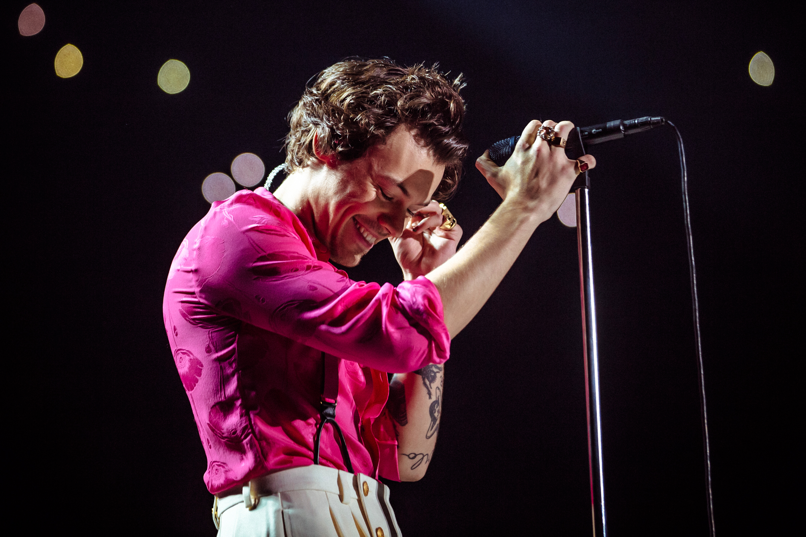

Музикант інвестує в Lalela Project, який забезпечує арт-освіту для африканських молодих людей.
Гаррі Стайлз обожнює одежу Gucci, фарбує нігті, носить одяг незвичного крою в неоромантичному стилі.
Гаррі не лише музикант, він також почав проявляти себе в ролі актора. Першим фільмом з його участю став "Дюнкерк".
З 16 років виконавець почав набивати тату. Зараз на його тілі більше ніж 40 татуювань.
Народився Гаррі Стайлз 1 лютого 1994 року в місті Реддітч, що у Великобританії. Музика йому подобалася з дитинства, полюбляв вивчати пісні Елвіса Преслі. Коли хлопцю було 7 років, його батьки розвелися, і він разом з сестрою Джеммою залишилися на вихованні у матері, яка переїхала з дітьми в маленьке містечко Холмс-Чапел у графстві Чешир. Стайлз тяжко переживав розлучення батьків, тому був дуже радий, коли вітчим Робін зробив пропозицію його матері.
В школі Гаррі був солістом власної групи White Eskimo. Вони разом виступали на шкільних концертах, в місцевих клубах і навіть виграли конкурс Battle of the Bands Competition, в якому брали участь всі місцеві любительскі підліткові колективи. Після закінчення середнбої школи Стайлз припинив навчатися і почав працювати на неповний робочий день в пекарні, час від часу займався розвитком своїх вокальних здібностей.
Вперше світ побачив Гаррі Стайлза в 2010 році на прослуховуваннях для британського реаліті-шоу The X-Factor. 16-річний хлопець швидко зачарував аудиторію завдяки своїй харизмі, репертуару з чуттєвих балад про любов та приємній зовнішності. За пропозицією судді шоу Ніколь Шерзінгер, Гаррі Стайлза і Ліама Пейна, Луї Томлінсона, Найла Хорана та Зейна Маліка об'єднали в один бойз-бенд під назвою One Direction. Вони зайняли в шоу третє місце, однак все одно отримали контракт з лейблом і почали експансію на світову сцену.
Бойз-бенд був прибутковою ідеєю, оскільки їх фантастичний успіх відомий ще з 90-х років. Маркетологи знали: жінки готові купувати більше, ніж чоловіки, і бойз-бенди пропонують для своєї аудиторії кільки різних типажів чоловіків в одному флаконі. Група швидко потрапила в топ чартів й захопила ринок США. Недивлячись на таку популярність, слухачі не могли сприймати групу як щось більше, ніж комерційну машину, а людям з розвинутим музикальним слухом не хотілося вмикати пісні для підлітків. Саме через це першим в 2015 році бойз-бенд покинув Зейн Малік, а в 2016 році One Direction об'явила про безстрокову перерву в діяльності групи. Ось так кожен учасник почав свій сольний шлях.
Разом з группою Гаррі починав зі звичайних поп-пісень для танцполу. Їхні вокальні данні та маніпуляції до фанаток у піснях завоювали дівочі серця. Перша власна пісня Гаррі Стайлза Sign of the Times більше тижня висіла першим номером у чартах та одразу набрала майже мільярд переглядів на Ютуб. Власне сам альбом довів самостійність і можливісь бути важливою творчою одиницею сам-на-сам, перебуваючи на кордоні поп-музики та рок-н-роллу.
На початку кар'єри ніхто б не сказав, що з Гаррі Стайлза може вирости ікона стилю. Тоді він був по-дитячому милим, добродушним підлітком у звечайних речах. В період другого альбома групи він став частіше одягатися в елегантні костюми та тренчі. До 2013-2014 гардероб Гаррі заполонили речі типічного лондонського інді-рокера: вузькі джинси, леопардовий принт, татуювання, багато чорного кольору. Розпад групи дозволив Стайлзу приділити увагу на себе, зрозуміти свої власні мрії та бажання. Після початку сольної кар'єри співака почали називати епатажним: гліттер, вишивка, яскраві кольори, жіноча одежа, загравання з гендерними стереотипами стали однією з його фішок.
Велич
Вишуканість
Натхненність
Зацікавленність
Стайлз отримав номінації в категоріях "Кращий британський соло-артист" і "Кращий британський альбом". У 2021 році Національна академя мистецтва і науки звукозапису висунула Гаррі на отримання трьох премій "Греммі" в категоріях "Кращий вокальний поп-альбом", "Найкраще сольне поп-виконання" та "Найкраще музикальне відео". Гаррі отримав премію в категорії "Найкраще сольне поп-виконання" за пісню Watermalon Sugar.
На початку березня 2016 року стало відомо, що Гаррі Стайлз виконає одну з головних ролей у фільмі "Дюнкерк" режисера Кристофера Нолана. Також Гаррі з'явиться в ролі Ероса, брата Таноса, в сцені після тітрів картини Хлої Чжао "Вічні". Це стане першою появою Стайлза і його персонажа в Кінематографічному всесвіті Марвел.